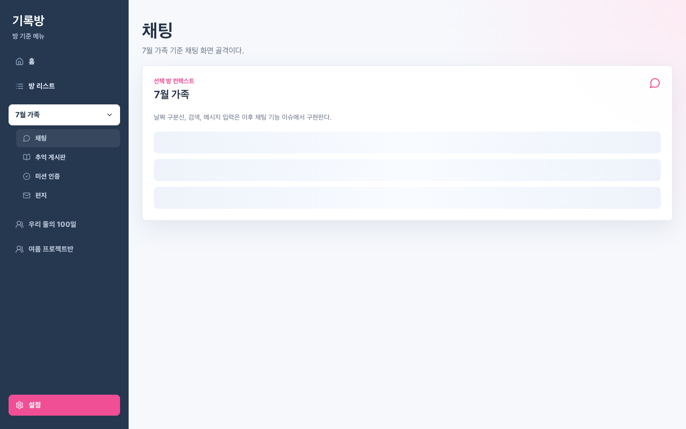
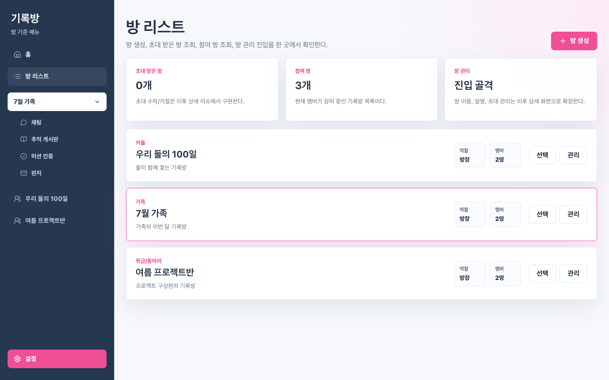
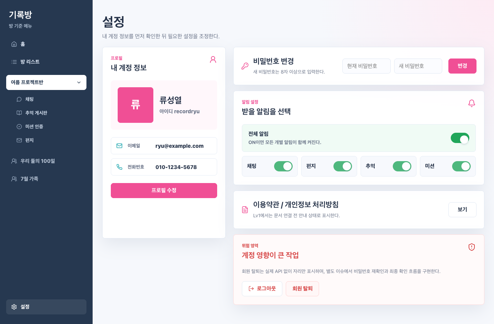

QA Scope
검증 범위
- 사이드바
- 홈
- 방 리스트
- 선택 방 하위 메뉴
- 설정 진입
- 방 내부 기능 placeholder
제외 범위
- 채팅/추억/미션/편지 실제 기능
- 주문/책 기능
- 모바일 상세 QA
- 전체 회귀
방 리스트 및 사이드바 구현 범위만 집중 검증했다. Full QA는 실행하지 않았다.
검증 범위
제외 범위
| 검증 항목 | 결과 | 상세 | 증거 |
|---|---|---|---|
| 사이드바 구조 표시 | PASS | 좌측 사이드바와 방 기준 메뉴 구성 확인 | evidence |
| 참여 방 목록 표시 | PASS | 참여 방 3개가 사이드바에 표시됨 | evidence |
| 방 리스트 페이지 골격 | PASS | 방 생성/초대/참여/관리 허브와 참여 방 카드 표시 | evidence |
| 검증 항목 | 결과 | 상세 | 증거 |
|---|---|---|---|
| 앱 실행 및 홈 표시 | PASS | 홈 화면 정상 표시 | evidence |
| 최상단 방 기본 선택 | PASS | 우리 둘의 100일이 기본 선택됨 | evidence |
| 다른 방 선택 후 컨텍스트 변경 | PASS | 선택 방과 본문 컨텍스트가 7월 가족으로 변경됨 | evidence |
| 채팅 placeholder 이동 | PASS | 채팅 골격 화면 표시 | evidence |
| 추억 게시판 placeholder 이동 | PASS | 추억 게시판 골격 화면 표시 및 선택 방 컨텍스트 유지 | evidence |
| 미션 인증 placeholder 이동 | PASS | 미션 인증 골격 화면 표시 및 선택 방 컨텍스트 유지 | evidence |
| 편지 placeholder 이동 | PASS | 편지 골격 화면 표시 및 선택 방 컨텍스트 유지 | evidence |
| 방 리스트에서 방 선택 변경 | PASS | 방 리스트에서 선택한 방이 사이드바와 홈 본문에 반영됨 | evidence |
| 설정 진입 유지 | PASS | Issue #4 설정 화면 골격으로 진입됨 | evidence |
| 검증 항목 | 결과 | 상세 | 증거 |
|---|---|---|---|
| 앱 console/pageerror 없음 | PASS | favicon.ico 404는 브라우저 기본 부수 요청으로 분리. 앱 JS console error/pageerror 없음 | - |
| 명백한 UI 깨짐 없음 | PASS | 1440px 웹 모니터 기준 가로 overflow 없음 | evidence |
BLOCKER/CRITICAL 및 재현해야 할 실패 없음.
PASS이므로 영상/trace는 저장하지 않았다.
자동 검증 결과: result JSON




{kind=link}
{kind=link}
{kind=link}